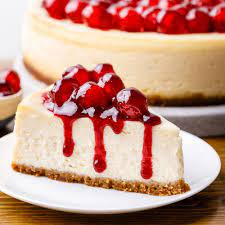

Cheesecake |
|
|---|---|
| Posted on 05.October.202/posted in"/posted in Thekitchn | Order |
|  | |
|
Cheesecake is a sweet dessert consisting of one or more layers. The main, and thickest, layer consists of a mixture of a soft, fresh cheese (typically cottage cheese, cream cheese or ricotta), eggs, and sugar. If there is a bottom layer, it most often consists of a crust or base made from crushed cookies (or digestive biscuits), graham crackers, pastry, or sometimes sponge cake.Cheesecake may be baked or unbaked An ancient form of cheesecake may have been a popular dish in ancient Greece even prior to Romans' adoption of it with the conquest of Greece. The earliest attested mention of a cheesecake is by the Greek physician Aegimus (5th century BCE), who wrote a book on the art of making cheesecakesThe earliest extant cheesecake recipes are found in Cato the Elder's De Agri Cultura, which includes recipes for three cakes for religious uses: libum, savillum and placenta.Of the three, placenta cake is the most like modern cheesecakes: having a crust that is separately prepared and baked |
|
Ingredients |
|
For more watch videoModern commercial American cream cheese was developed in 1872, when William Lawrence, from Chester, New York, while looking for a way to recreate the soft, French cheese Neufchâtel, accidentally came up with a way of making an "unripened cheese" that is heavier and creamier; other dairymen came up with similar creations independently.Modern cheesecake comes in two different types. Along with the baked cheesecake, some cheesecakes are made with uncooked cream cheese on a crumbled-cookie or graham cracker base. This type of cheesecake was invented in the United States. |
|
Common Cheesecake Questions – Answered
|
|
CONTACT USFacebook - Thekitchn Instagram - Thekitchn Location - |